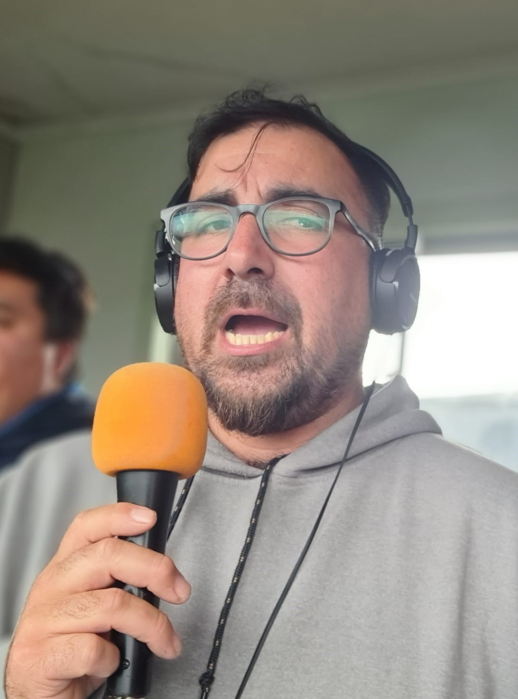
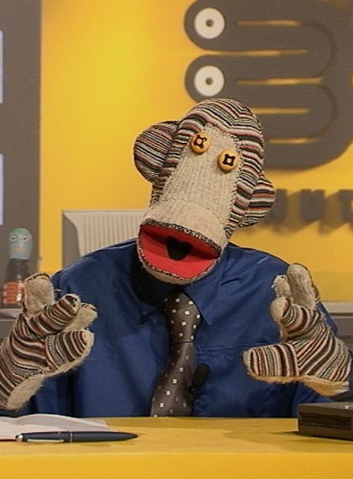

director
cesar triviño director y fundador de la radio CyS, quien lleva una gran y prospera trayectoriaen el oficio de director y locutor.

carlos marquez
Locutor y periodista de nuestra radio con gran talento y ganas de compartir un buen contenido.

Tulio Triviño
el mejor periodista y locutor de chile.